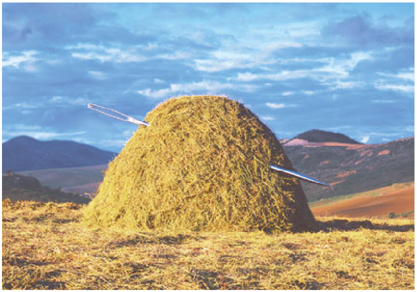

using GMT
image("@needle.jpg", pos=(paper=true, anchor=(0,0), width=7), show=1)
Plot raster or EPS images
image reads an Encapsulated PostScript file or a raster image file and plots it on a map. The image can be scaled arbitrarily, and 1-bit raster images can be (1) inverted, i.e., black pixels (on) becomes white (off) and vice versa, or (2) colorized, by assigning different foreground and background colors, and (3) made transparent where one of back- or foreground is painted only. As an option, the user may choose to convert colored raster images to grayscale using TV’s YIQ-transformation. For raster files, the user can select which color to be made transparent. The user may also choose to replicate the image which, when preceded by appropriate clip paths, may allow larger custom-designed fill patterns to be implemented (the pattern mechanism offered in most GMT programs is limited to rasters smaller than 146 by 146).
imagefile This must be an Encapsulated PostScript (EPS) file or a raster image. An EPS file must contain an appropriate BoundingBox. A raster file can have a depth of 1, 8, 24, or 32 bits and is read via GDAL.
B or axes or frame
Set map boundary frame and axes attributes. Default is to draw and annotate left, bottom and vertical axes and just draw left and top axes. More at [frame](../common_opts/opt_B.html)
D or pos or position : – pos=(map=true, inside=true, outside=true, norm=true, paper=true, anchor=XX, dpi=XX, width=XX, justify=code, repeat=n, offset=XX)
Sets reference point on the map for the image using one of four coordinate systems:
By default, the anchor point on the scale is assumed to be the bottom left corner (BL), but this can be changed by adding justify=:code where :code is a 2-char justification code (see text). Note: If inside is used (the default) then justify defaults to the same as refpoint, if outside is used then justify defaults to the mirror opposite of refpoint. Specify image size in one of two ways: Use dpi=val to set the dpi of the image in val dots per inch, or use width=width or width=(width,height) to set the width (and height) of the image in plot coordinates (inches, cm, etc.). If height is not given, the original aspect ratio of the image is maintained. If width is negative we use the absolute value and interpolate image to the device resolution using the PostScript image operator. If neither size nor dpi is set then we revert to the default dpi [GMT_GRAPHICS_DPU]. Optionally, use replicate=nx or replicate=(nx,ny) to replicate the image nx times horizontally and ny times vertically. If ny is omitted, it will be identical to nx [Default is 1/1].
F or box : – box=(clearance=gap, pen=pen, fill=fill, inner=(gap,pen), rounded=xx, shaded=(dx,dy[,shade]))
Without further options, draws a rectangular border around the map scale or rose using MAP_FRAME_PEN; specify a different pen with pen=new_pen. Add fill=fill_value to fill the logo box [no fill]. Append clearance=gap where gap is either a scalar, or tuples with (xgap, ygap), or (lgap,rgap,bgap,tgap) where these items are uniform, separate in x- and y-direction, or individual side spacings between logo and border. Append inner to draw a secondary, inner border as well. We use a uniform gap between borders of 2p and the MAP_DEFAULT_PEN unless other values are specified. Append rounded=6 to draw rounded rectangular borders instead, with a 6p corner radius. You can override this radius by appending another value. Finally, append shaded=(dx,dy[,shade]) to draw an offset background shaded region. Here, dx,dy indicates the shift relative to the foreground frame [4p,4p] and shade sets the fill style to use for shading [gray50]. Requires map_scale or rose. If both map_scale or rose, you may repeat box after each of these but remember to put repeated settings inside a tuple of tuples.
G or bitcolor or bit_color or bit_bg|fg|alpha : – bit_bg=color | bit_fg=color | bit_alpha=color | bitcolor=color[+b|+f|+t]
Change certain pixel values to another color or make them transparent. For 1-bit images you can specify an alternate color for the background (bit_bg=color) or the foreground (bit_bf=color) pixels, or give no color to make those pixels transparent. Alternatively, for color images you can select a single color that should be made transparent instead (bit_alpha=color). The last form, G or bit_color, allows using the plain GMT syntax, but does not let set more than one of the bg, fg or alpha settings.
I or invert : – invert=true
Invert 1-bit image before plotting. This is what is done when you use G=:P to invert patterns in other GMT plotting programs. Ignored if used with color images.
J or proj or projection : – proj=
Select map projection. More at [proj](../common_opts/opt_J.html)
M or monochrome : – monochrome=true
Convert color image to monochrome grayshades using the (television) YIQ-transformation.
R or region or limits : – limits=(xmin, xmax, ymin, ymax) | limits=(BB=(xmin, xmax, ymin, ymax),) | limits=(LLUR=(xmin, xmax, ymin, ymax),units=“unit”) | …more
Specify the region of interest. More at [limits](../common_opts/opt_R.html). For perspective view view, optionally add zmin,zmax. This option may be used to indicate the range used for the 3-D axes. You may ask for a larger w/e/s/n region to have more room between the image and the axes.
For perspective view, optionally append zmin,zmax.
U or time_stamp : – time_stamp=true | time_stamp=(just=“code”, pos=(dx,dy), label=“label”, com=true)
Draw GMT time stamp logo on plot. More at [timestamp](../common_opts/opt_U.html)
V or verbose : – verbose=true | verbose=level
Select verbosity level. More at [verbose](../common_opts/opt_V.html)
X or xshift or x_offset : xshift=true | xshift=x-shift | xshift=(shift=x-shift, mov=“a|c|f|r”)
Shift plot origin. More at [xshift](../common_opts/opt_X.html)
Y or yshift or y_offset : yshift=true | yshift=y-shift | yshift=(shift=y-shift, mov=“a|c|f|r”)
Shift plot origin. More at [yshift](../common_opts/opt_Y.html)
p or view or perspective : – view=(azim, elev)
Default is viewpoint from an azimuth of 200 and elevation of 30 degrees.
Specify the viewpoint in terms of azimuth and elevation. The azimuth is the horizontal rotation about the z-axis as measured in degrees from the positive y-axis. That is, from North. This option is not yet fully expanded. Current alternatives are:
bar3!) More at [perspective](../common_opts/opt_p.html)t or transparency or alpha: – alpha=50
Set PDF transparency level for an overlay, in (0-100] percent range. [Default is 0, i.e., opaque]. Works only for the PDF and PNG formats.
The bit_color and invert options are for raster images only. They have no effect when placing Encapsulated PostScript files.
To plot the remote image needle.jpg, scaling it be 7 cm wide (height is scaled accordingly), use:
To plot the same file but reversing the bands, use:
To only plot its red band as gray shade, use:
To include an Encapsulated PostScript file gallo.eps with its upper right corner 5 cm to the right and 2.5 cm up from the current location, and have its width scaled to 4 cm, while keeping the aspect ratio, use:
To replicate the 1-bit remote raster image vader1.png, colorize it (dark gray background and yellow foreground), and setting each of 6 by 12 tiles to be 2.5 cm wide, use: